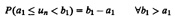
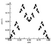
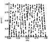
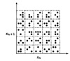

| Previous | Table of Contents | Next |
One problem with the empirical tests discussed so far is that if the sample size is too small, the test results may apply locally, but not globally to the complete cycle. Similarly, the results of a global test may not apply locally, and there may still be considerable nonrandomness in segments of the sequence. To overcome this problem, some researchers propose using two-level tests. For example, they use a chi-square test on n samples of size k each and then use a chi-square test on the set of n chi-square statistics so obtained. This is called a chi-square-on-chi-square test. Similarly, a K-S-on-K-S test has also been used. Some people have used this procedure to find a “nonrandom” segment of an otherwise random sequence.
The tests described in Sections 27.1 to 27.4 ensure that the numbers are uniformly distributed in one dimension. The concept of uniformity can be extended to k dimensions as follows.
Suppose un is the nth number in a random sequence that is uniformly distributed between 0 and 1. Given two real numbers a1 and b1, also between 0 and 1 such that b1 > a1, the probability that Un lies in the interval [a1, b1) is b1 - a1:

This is known as the 1-distributivity property of un.
The 2-distributivity is a generalization of this property in two dimensions. It requires that the pairs of successive values un-1 and un satisfy the following condition:
P(a1 ≤ un-1 < b1 and a2, ≤ un b2) = (b1 -a1)(b2 -a2)
This is for all choices of a1, b1, a2, b2 in [0, 1), b1 > a1 and b2 > a2. Finally, a sequence is called k distributed if
P(a1 ≤ un < b1,...,ak ≤ un+k-1 < bk) = (b1 - a1)...(bk - ak)
This is for all choices of ai, bi in [0, 1), with bi > ai, i =1, 2, ...,k. Notice that a k-distributed sequence is always k -1 distributed. The inverse is not true. A random-number sequence may be uniform in a lower dimension but may not be uniform in a higher dimension. Obviously, given a choice of several generators, the generator that produces most uniformity in the highest dimension is preferable.
In the next two sections we present two ways to check for k-distributivity:
Before conducting these tests, it may be useful to visually check whether the sequence is uniform in two dimensions by looking at a plot of successive overlapping pairs of numbers in the sequence as points in a two-dimensional space. The following two examples illustrate this.

FIGURE 27.3 Plot of overlapping pairs from the Tausworthe generator x15 + x + 1.
x15 + x + 1
x15 + x4 + 1
A serial test is used to test for uniformity in two dimensions or higher. In two dimensions, one divides the space between 0 and 1 into K2 cells of equal area, as shown in Figure 27.5. Given n random numbers {x1, x2,..., xn} between 0 and 1, we could count from n/2 nonoverlapping pairs (x1, x2), (x3, x4),... and count the points that fall in each of the K2 cells. Ideally, one would expect n/(2K2) points in each cell. A chi-square test can then be used to find the deviation of the actual counts from the expected counts. The degrees of freedom in this case are K2 - 1. It is easy to see how this test can be extended to a k-dimension using k-tuples of nonoverlapping values.

FIGURE 27.4 Plot of overlaping pairs from the Tausworthe generator x15 + x4 + 1.

FIGURE 27.5 Two-dimensional uniformity requires that the the nonoverlapping pairs (xn, xn + 1) fall uniformly on all square cells.
It must be emphasized that for the serial test the pairs (or k-tuples) must be nonoverlapping. If overlapping pairs or tuples are used, the number of points in the cells are not independent and the chi-square test cannot be used. In the visual check of Section 27.5 as well as in the spectral test of Section 27.7, overlapping pairs and tuples are used. Given n numbers, there are n - 1 overlapping pairs, while there are only n/2 nonoverlapping pairs.
The dependence among successive numbers of a sequence shows up as nonuniformity in higher dimensions. For example, if the successive numbers have significant first-order negative correlation, a large xn is more likely to be followed by a small xn and vice versa. If we plot successive nonoverlapping pairs (xn-1, xn) as points on a scatter diagram, the points will tend to cluster more toward the right-bottom and left-top parts of the graph and will fail the chi-square test in two dimensions.
| Previous | Table of Contents | Next |
){kind=link}
){kind=link}
){kind=link}
){kind=link}
){kind=link}
){kind=link}